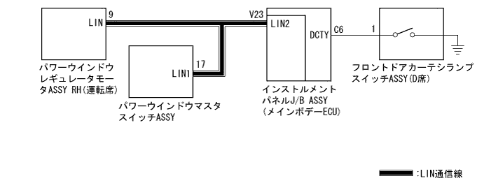
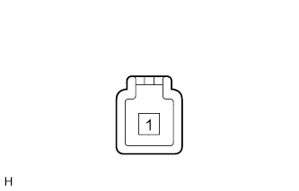
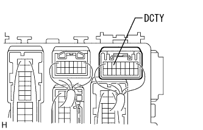

Power Window System Key-off Operation Occurs Even when Operating Conditions Are Not Met |

| Step 1 | Read TaSCAN Data |
Data Monitor
Using SST (TaSCAN), perform data monitoring of the LIN communication connection status between the power window regulator motor assembly RH (driver side) and main body ECU.
| Item Name [Symbol] | Item Description/Display Range | Standard Value | Remarks |
|---|---|---|---|
| D seat motor ECU connection status [DMRC] | Connection status between power window regulator motor assembly RH (driver side) and body ECU/display range: Not connected - Connected | Connected: When connection is detected Not connected: When connection is not detected | - |
|
| ||||
| OK | |
| Step 2 | Check Key-off Operation |
Check the symptom.
| Result | Proceed to |
|---|---|
| Operates even after the driver side door is opened and closed within approximately 45 seconds after the IG is turned OFF | A |
| Operates even after approximately 45 seconds have elapsed after the IG is turned OFF | B |
|
| ||||
| A | |
| Step 3 | Read TaSCAN Data |
Data Monitor
Using SST (TaSCAN), read the data on the status when the front door courtesy light switch assembly is operated.
| Item Name [Symbol] | Item Description/Display Range | Standard Value | Remarks |
|---|---|---|---|
| D seat courtesy SW [DCTY] | Driver side door courtesy light switch status/Display range: OFF - ON | OFF: Driver side door opened ON: Driver side door closed | - |
| Result | Proceed to |
|---|---|
| Driver side door open/closed status and data monitor screen are not synchronized | A |
| Driver side door open/closed status and data monitor screen are synchronized | B |
|
| ||||
| A | |
| Step 4 | Inspect Front Door Courtesy Light Switch Assembly (Body Ground) |
Using SST (Toyota electrical tester), with the front door courtesy switch assembly (D-seat) installed to the vehicle, turn back the rubber cover and measure the resistance between the bracket and body ground.
| Tester Connection | Condition | Standard |
|---|---|---|
| Bracket - Body ground | Always | Below 1 Ω |
|
| ||||
| OK | |
| Step 5 | Inspect Front Door Courtesy Light Switch Assembly (D Seat) |
 |
Using SST (Toyota electrical tester), measure the resistance between connector terminal 1 and the bracket.
| Tester Connection | Condition | Standard |
|---|---|---|
| 1 - Bracket | Switch pushed in | 10 kΩ or higher |
| 1 - Bracket | Switch not pushed in | Below 1 Ω |
|
| ||||
| OK | |
| Step 6 | Inspect Instrument Panel Junction Block Assembly |
 |
Using SST (Toyota electrical tester), with the connector connected, inspect between instrument panel junction block assembly connector C6 (DCTY) and body ground.
| Tester Connection (Terminal Symbol) | Condition | Specified Condition |
|---|---|---|
| C6 (DCTY) - Body ground | Driver side door closed | Pulse Generation |
| C6 (DCTY) - Body ground | Driver side door open | 1 V or less |
|
| ||||
| OK | ||
| ||
| Step 7 | Inspect Power Window Regulator Motor Assembly (Swap with Applicable Seat) |
Check the power window regulator motor assembly at the location that was operating after 45 seconds had elapsed after the key was turned OFF.
Prepare a new power window regulator motor assembly and swap it with the power window regulator motor assembly at the location that was operating.
| Result | Proceed to |
|---|---|
| Motor does not operate after 45 seconds have elapsed after the key is turned OFF | A |
| Motor operates after 45 seconds have elapsed after the key is turned OFF | B |
|
| ||||
| A | ||
| ||